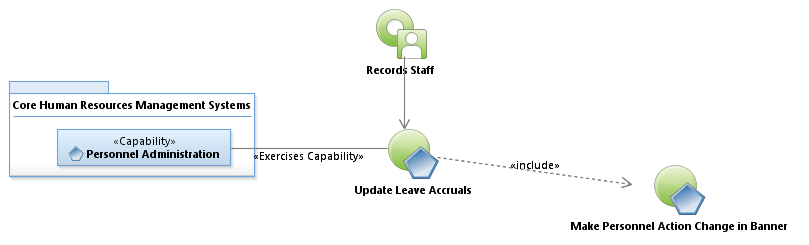
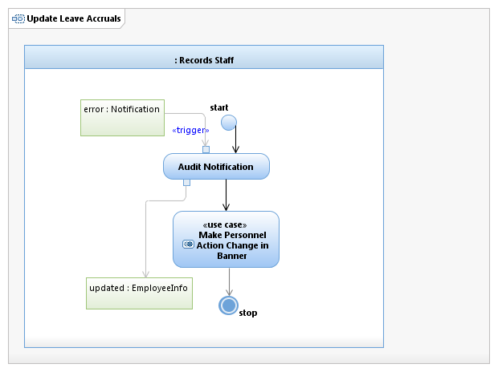

Use Case Model: Update Leave Accruals
Architect: Aaron Brown, IT Enterprise Architect Senior
Date Last Modified: 11/7/2012
User Review: Shannon Flett, HRD Records
Date: mm/dd/yyyy
When an employee meets probation, or when they have a status change (Temp to Perm., etc), the Banner system accruals for vacation, personal holiday, and sick are updated to reflect correct accrual balances.
Follow link to Role Definitions

Use Case Model: Update Leave Accruals

Activity Model: Update Leave Accruals
Activity Documentation
| Activity | Documentation |
|---|---|
| Audit Notification and Update Leave Balance in Banner | Date of hire, work week hours, and status changes are checked. |
Note: When the activity is self explanatory no documentation is provided.